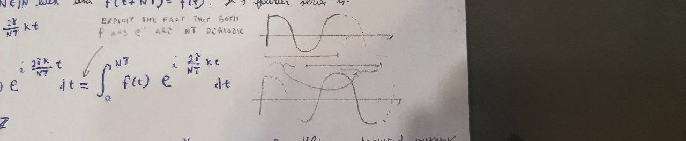
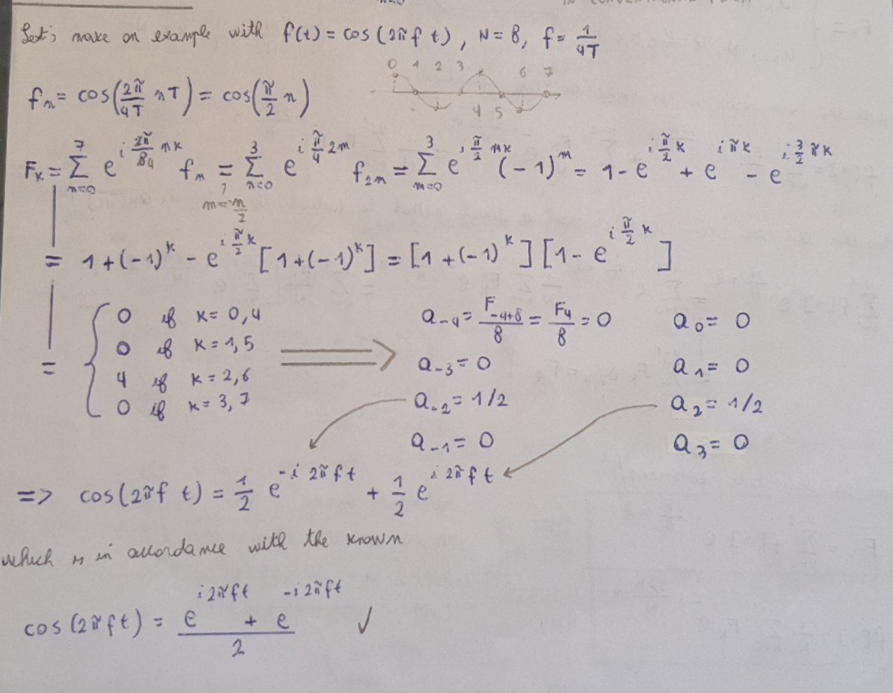

Lecture 09 - 25 October 2021¶
Fourier Transforms¶
Up to now the focus was on two main kind of Fourier Transforms:
Fourier Integral (\(\mathcal{L}^2\) functions, based on Fourier theorem)
Fourier Series (for periodic functions)
The fourier series needs the functions considered to be periodic. A quick fix for that is to truncate the function when they are sufficiently close to zero and repeat them.
import matplotlib.pyplot as plt
import numpy as np
##############
# PARAMETERS #
##############
T=5 # When to truncate the function
tau = 20
omega = np.linspace(start=0, stop=20, num=1000, endpoint=True)
lp = np.abs(1/(1-1j*omega*tau) )
#########
# PLOTS #
#########
fig, ax = plt.subplots(1, 1, figsize=(15, 4))
idx = (np.abs(omega - T)).argmin() # Closest value to T
ax.plot(omega[:idx], lp[:idx], "b", label="Low Pass")
ax.plot(omega[idx:], lp[idx:], "b-.", label="Low Pass")
ax.vlines(x=T, ymin=0, ymax=1, color="k", label="Truncation")
idx = (np.abs(omega - T)).argmin() # Closest value to T
i=1;
while ((i+1)*idx)<omega.shape[0]:
ax.plot(omega[i*idx:(i+1)*idx], lp[:idx], "--", label="Repetition {:d}".format(i))
ax.vlines(x=(i+1)*T, ymin=0, ymax=1, color="k")
i=i+1
ax.plot(omega[i*idx:], lp[:omega.shape[0]-i*idx], "b--", label="Repetition {:d}".format(i))
ax.grid()
ax.legend()
fig.tight_layout()
plt.show()

Discrete Fourier Transform¶
The discrete Fourier Transform (DFT) is the discrete version of the Fourier Transform that does not require the computation of integrals. The fast Fourier Transform (FFT) is a faster way (\(\mathcal{O}(Nlog(N))\) instead of \(\mathcal{O}(N^2)\)) to compute the DFT with some minor additional contraints. Let’s walk through the DFT:
Assumption
Assume a function \(f\) which is periodic (\(f(t+T)=f(t)\)) and has period equal to an even multiple of the sampling time T: \(T_f=NT, N\in\matchcal{N}^{+}_{even}\).
The Fourier series of such a function is:

A minimal assumpion that is necessary to make is that
Assumption
\(f(t)\) is \(\frac{\pi}{T}\) band limited.
This assumption is minimal because one usually works with physical signals that needs to be sampled according to the Nyquist-Shannon theorem:
and that explains why N was choosen even too.
The series can then be written as:
It is possible to perform a change of variable in the second summation:
so that the Fourier series becomes:
As it was stated before, a physical signal is usually band limited and sampled with sampling time T:
this leads to a new series defined as:
this new series allows to merge the two summations:
As it is clear from the previous formula, the Inverse DFT allows us to compute the integral \(a_k=\frac{1}{T}\int_{-\frac{T}{2}}^{\frac{T}{2}} f(t) e^{i\omega_k t}dt\) withot needing to perform any kind of integration. Furthermore:
This relation provides an expression for the DFT. Summing up:
Discrete Fourier Transform¶
Inverse Discrete Fourier Transform¶
It’s is essential to remark that what was found is a way to compute a continuous transform \(\mathcal{FT}\) using only discrete summations which computers can handle very well and with minimum errors.
Properties of the DFT¶
Periodicity¶
In time¶
In Frequency¶
Perceval relation¶
Warning
As the actual energy of a periodic signal is infinite. For that reason, when talking about energy for a periodic signal, only one period is taken in account.
Finally, before moving to a small exercise let’s introduce a new notation:
These two are the conventional form of the DFT and its inverse.
